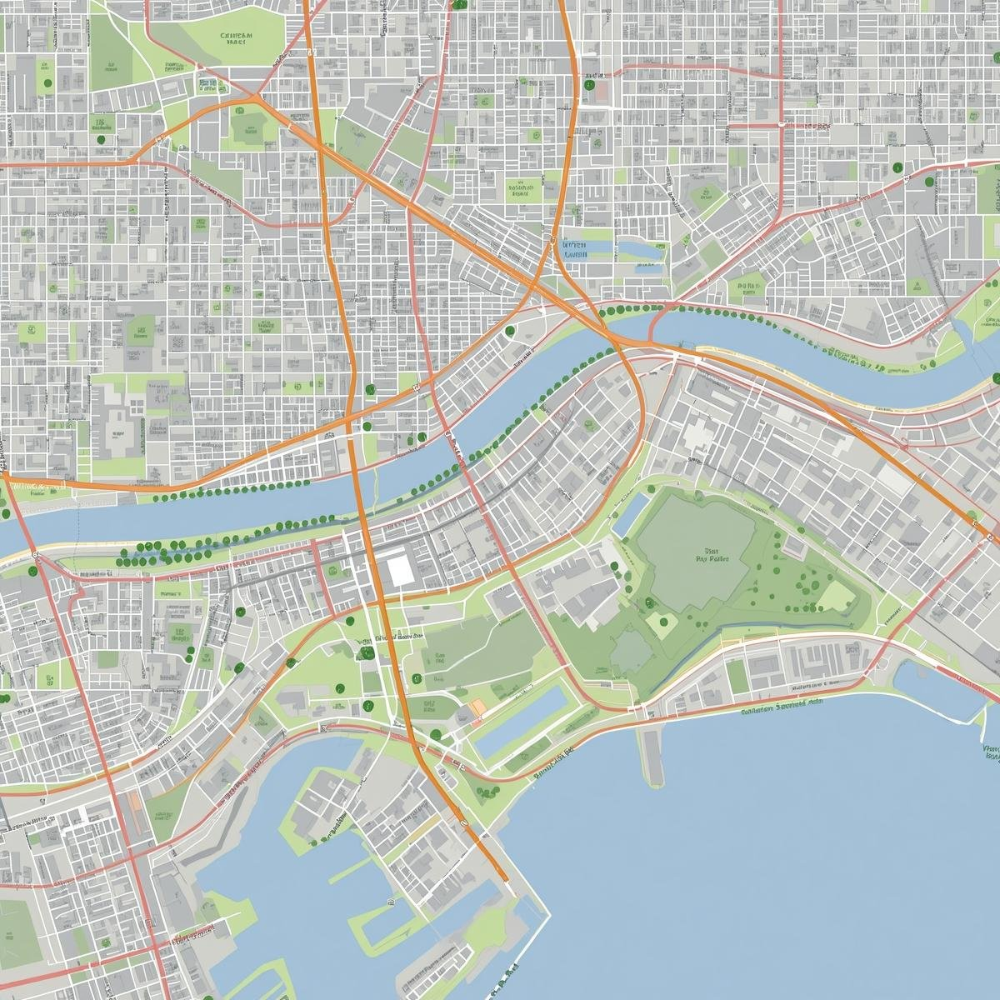

Map of New Grove

Tourist map of New Grove highlighting neighborhoods, parks, and the Silver River.
About New Grove City
Welcome to New Grove City! This fictional city is known for its beautiful groves, vibrant neighborhoods, and scenic landmarks. Use the map above to explore different areas of the city and discover hidden gems.